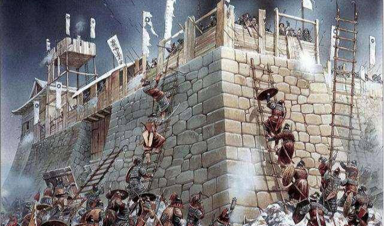

努尔哈赤起兵攻城时，最爱用什么战术，战况如何
努尔哈赤觉得李成梁听信谗言后想对他动手，就提前和李成梁辞别，带着几十名兄弟们，回到了他的老家建州地区。在辽东起兵后，努尔哈赤反抗明朝政府的暴政，向天下公布了七大恨的诏书，并把诏书交给了朝鲜、蒙古部落等一些地方，向他们宣誓说自己另起炉灶，重新建立新王朝，不再是明朝的附庸。
为了这一天，努尔哈赤等了很久，忍辱负重了很长一段时间。幼年的时候，努尔哈赤出身世家大族，好歹有亲人。他的爷爷和父亲都是世袭的建州右卫都督，对明朝忠心耿耿，没有反叛的心思。在奉命去劝说反叛的满族城堡的时候，二人以身犯险，骑着马去了叛将固守的城池。当他们正在和叛军谈判的时候，外面的明朝大军突然攻城，进城后烧杀抢虐，杀了不少满族人，还错杀了这二人。
至此，努尔哈赤和他的弟弟成了孤儿，在外面到处流荡，缺吃少穿，很困难。幸亏，明朝大将李成梁收留了他们俩，把他们当了自己的卫士。就是在李成梁手当差的时候，努尔哈赤学了不少本领，为他以后打天下奠定了很好的基础。
由于他是李成梁的亲兵，所以，他经常在李成梁的身边待着，近水楼台先得月，耳濡目染，学了李成梁的很多带兵本领，成了李成梁的好学生。再加上他刻苦学习，自学了汉语，很喜爱读兵书，更爱读《三国演义》，对兵法和战例烂熟于心，初步具备了将领的能力。
后来，当他带兵打仗的时候，努尔哈赤就下令他的将士们要经常读《三国演义》这部经典的书籍，在八旗部队用最实惠的办法普及了军事知识，为八旗大军的强大铺好了道路。没想到的是，一部四大名著竟然促成了努尔哈赤的千秋伟业，更让八旗军队名扬天下！
话说，万历皇帝得知后，很生气，赶紧派钦差大臣杨镐统帅明朝在全国各地征集的四十多万大军，前往辽东地区，准备平叛，再对努尔哈赤的后金政权进行残酷的清洗，维持明朝政府在辽东地区的统治。让明朝统治者大为失望的是，杨镐统帅的四十多万明朝大军分兵出击，在东北这个人生地不熟的地方被动挨打，在萨尔浒被努尔哈赤埋伏在那里很久的八旗军队打得大败。
自此，明朝开始在辽东地区接连不断地打败仗，失去了不少的土地，直到失去整个辽东地区，再也无法抵御清朝的崛起。当努尔哈赤打败了明朝大军后，他开始了四处征战之路，并建都，还定了国号，开始了他的辽东的逆袭之旅。明朝政府由于失去了四十多万大军，短期内无法再阻止努尔哈赤的步伐，只能眼睁睁地看着辽东地区被努尔哈赤一步步占领。
观察清太祖努尔哈赤在辽东地区的非常征战之路，我们就会惊讶地发现，努尔哈赤在征战初期，经常使用里应外合这一兵家计谋，屡试不爽、屡战屡胜，先后收复了开原、铁岭、辽阳、沈阳、广宁、大凌河、锦州等地，逐步实现了对辽东地区的绝对控制。
努尔哈赤在明朝当过差，知道明军将士的情况，对明朝在东北的军力布置有个大致的了解，所以，他选择突破口的时候，总是能够找准明军的死穴所在，攻城后迅速和城内的奸细里应外合，让他们打开城门，火速入城，大肆地烧杀抢虐后，毁掉一些城池，占据一些关键的位置，攫取了成功的第一桶金。能有这么好的战况，和努尔哈赤在东北布置了大量的间谍有关。努尔哈赤对李成梁的用兵战术有了清晰认识，自然知道怎么用兵最划算的，当然清楚用好间谍可以达到事半功倍的效果。

再说，李成梁之所以能够取得那么多辉煌，也是大量使用各种间谍啊！靠着李成梁的榜样带头，努尔哈赤学得很快，也学会了李成梁的这一招，自然成了战无不胜的战神。
小编认为，努尔哈赤在跟随李成梁期间，打了不少战争，他知道什么时候用什么方式打仗，也清楚关外明军和他的优势劣势。在反复思考后，觉得里应外合这样的计谋最适合他刚起家时的攻城略地，更适合后金政权在辽东地区的进一步扩大战果。所以最后，努尔哈赤成了辽东战场不可战胜的大英雄，为清朝统一江山社稷做出了巨大贡献。